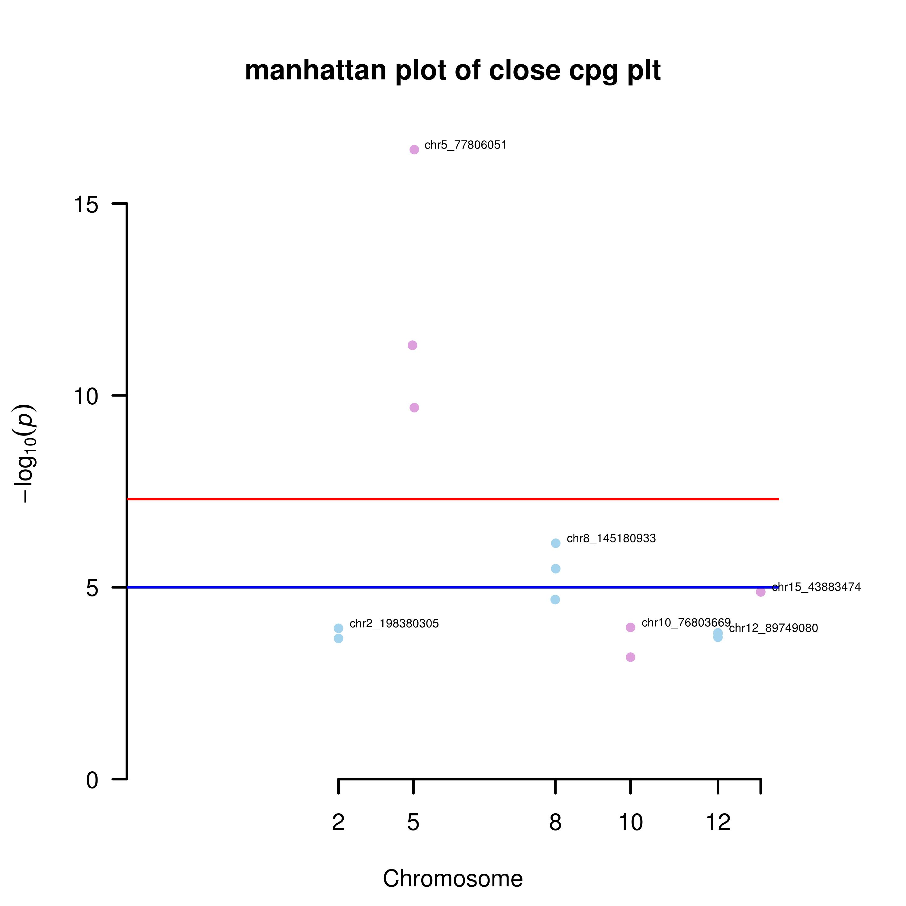
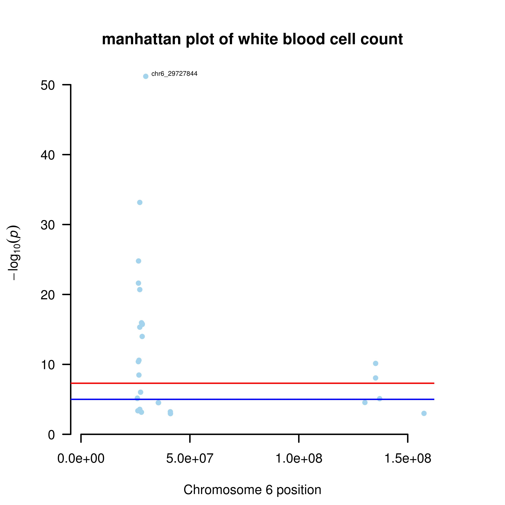
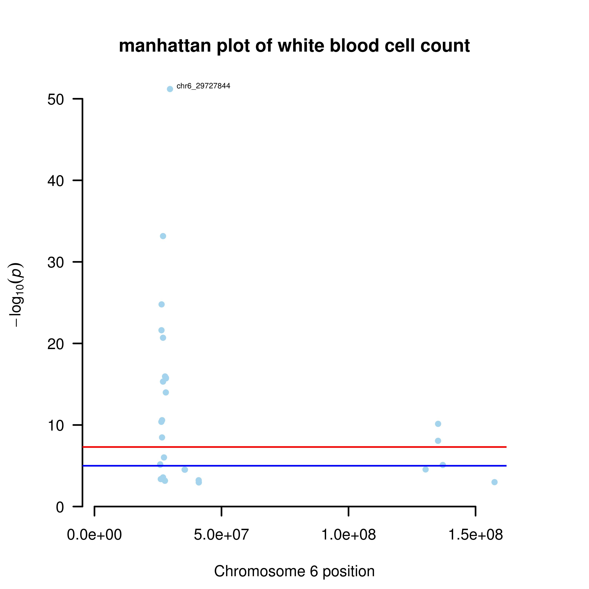

Manhattan plot of the TWAS analysis results.
We made Manhattan plot of all significant CpGs (TWAS.P.Bonferroni < 0.05) found by TWAS analysis.
Some significant CpGs are close to each other (distances between them are less than 1 kb). We made manhattan plot of these CpGs of each traits.

We made more detailed manhattan plots of chromosome 6.
 

Find overlap between Methylation-TWAS results and expression-TWAS results
LCL data

Whole blood data
 BACK
BACK